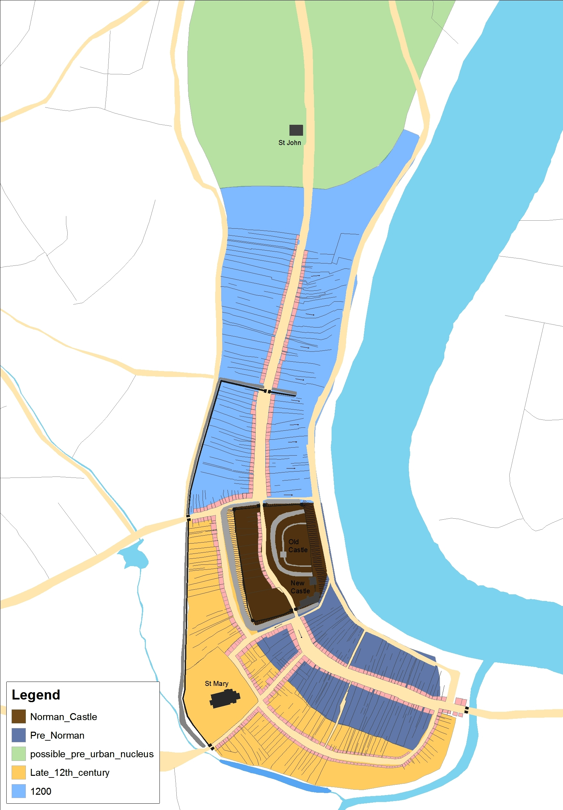

Blog
Locating Viking Swansea
Locating Viking Swansea
One of the unexpected outcomes of mapping medieval Swansea for the City Witness project is some new insights into where Viking Swansea was located.
The evidence is slight, but suggestive and it comes from analysing the layout of Swansea’s medieval town plan. The place-name of Swansea itself has long been used to indicate an association with ‘the Norsemen’ – the Vikings – and it has been suggested that the name Sweyns-ey – Sweyn’s island – referred to an island in the River Tawe at its mouth. But is there any evidence that there was a Viking settlement as well?
Mapping medieval Swansea has used an approach called ‘plan analysis’. This reveals differences in the layout – or plan – of the town’s streets and its patterns of building plots, as shown on the map here.
Variations in the shapes of the town’s streets and plots provide a clue to past phases of urban development, even where these are not documented by historical sources. For Swansea some of these phases of development are dateable through archaeological evidence, as in the case of the castle, but for others we need to look at the possible sequence of development revealed by the patterns of the streets and plots in the town-plan. We might also look to see how Swansea compared to other medieval towns in Wales.
The conventional pattern in the development of Norman towns in Wales involved the creation of a ‘castle-town’, often represented in the town-plan by a motte and bailey castle adjoining a long broad street fronted with deep plots. At Swansea this seems to be what we have, with Wind Street, the town’s main medieval market street, leading up to the gates of the castle. With the castle in existence by 1116 it may be that the town was laid out at the same time, as was often the case under the Normans. Then, after this, further expansion of Swansea took place, as indicated by new areas added to the town, one to the north of the castle (High Street), and one to the west of Wind Street, around Fisher Street and St Mary’s.

All this ties neatly with similar patterns of medieval urban development observed elsewhere in Wales, but where does Viking Swansea fit in?
Imagine for a moment that the castle was not there. If the motte and bailey castle is removed from the town plan, what might have been located there before it? Had Wind Street originally extended further northwards, underneath what became the site of the castle, to join with what is now High Street? One piece of evidence to suggest that this might have indeed been the case is the way that both Wind Street and High Street share the same alignment and street-width. This can be seen in the accompanying maps. Perhaps the layout of Wind Street (and its associated plot patterns) had once extended further northwards, but subsequently built over by the Normans in around 1100 to create the new castle? This would help explain why Wind Street and High Street are the same width and why they are on the same alignment.
Building a new castle, and placing it on top of existing streets and plots, was a well-practiced approach used by the Normans in both England and Wales in the late-eleventh and twelfth centuries, so why not also at Swansea? If it did occur at Swansea, then an area with similar characteristics to Wind Street may have existed before Normans came and erased it by building a castle there, on the higher part of ground above the river, as shown here.

Using this approach we have mapped an area of ‘pre-Norman’ Swansea, showing an area that could have been built-up before 1100, possibly preserving the outlines of Viking Swansea. This suggestion is not as far-fetched as it may seem. Something must have made the site appear attractive to the Normans, and a pre-existing established trading settlement at Swansea would have had given it this appeal.
The shoreline settlement, with a street running parallel to the river, with plots on either side, is a pattern to be found in other Viking trading settlements, for example in south-east Ireland, just across the sea from Swansea. For the tenth- and eleventh-century traders crossing to Britain from Ireland, having such an outpost in Wales, at Swansea, would clearly have been advantageous. The plan of Viking Swansea – if that is what we have here – looks similar to Viking ‘longphorts’ in Ireland such as those at Cork, Wexford and Waterford.
To help confirm these ideas what is needed is a comparative study of Viking towns around the Irish Sea, as well as a fresh look at archaeological finds from the period in south-west Wales. To this end, a Queen’s University Belfast “Heritage Science” Masters student, Claire Holmes, is currently working on the City Witness project to see if we can go further in locating Viking Swansea.
Share on Twitter Share on Facebook